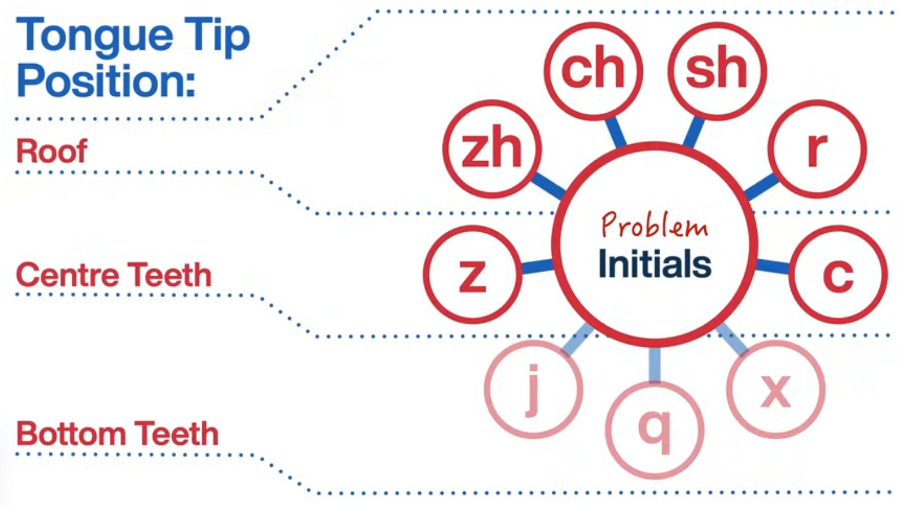
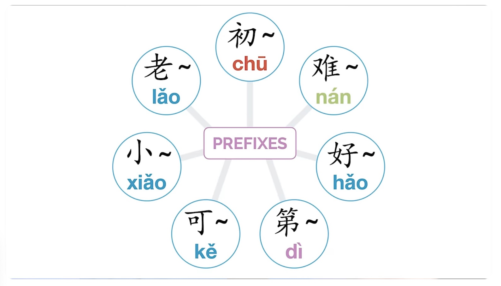
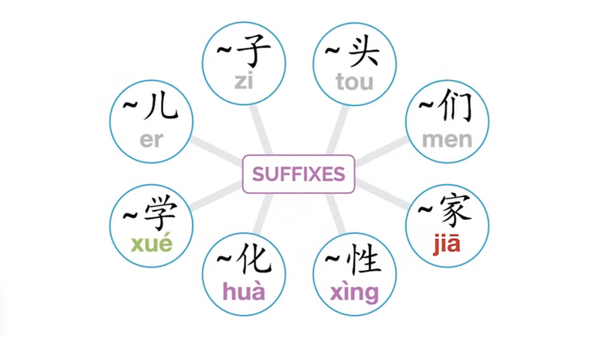

1st = hightest natural tone
2nd = mid to highest
3rd = mid to low to mid (zombie saying ‘brains’)
4th = highest to lowest (telling dog no)
b, d, g = softer than English, like beatboxing
t, p, k = more breathy than English
zh, ch, sh, r = roof of mouth
z, c = centre teeth
j, q, x = behind bottom teeth

7th is ‘初’ but only used for zodiac calendar

Old
For familiarity or seniority
老婆 wife
老外 foreigner
Young
小猫 kitten
小狗 puppy
Good and bad
好看 pretty
难看 ugly
好吃 delicious
难吃 gross/not delicious
Adds ～able
可爱 lovable/cute
可笑 laughable
Makes numbers ordinal
第一 first
第二十 twentieth
Used between verb and result to indicate if that verb can be
achieved
Not used with all verbs but used with common ones
听懂 to understand through listening
- 听得懂 Can understand/understandable
- 听不懂 Not understandable
吃完 finish eating
- 吃得完 can finish eating
- 吃不完 cannot finish eating
Characters attaxhed to ends of words or compounds to give different
meaning

Makes word more casual
那儿 where
玩儿 to have fun
Makes nouns
鞋子 shoes
骗 -> 骗子 to cheat -> cheater
Makes nouns （fifth tone）
舌头 tongue
骨头 bone in body
尽头 end of something, typically directions
Plural for humans
我们 we
朋友们 friends
孩子们 children
邻居们 neighbours
Indicates expert in field
艺术 -> 艺术家 art -> artist
作家 writer
科学家 scientist
Adds ~iety, ~ness, ~ism, ~ship, or ~ence to create nouns
可能 -> 可能性 possible -> possibility
真实 -> 真实性 validity -> valiidity
Adds ~ize or ~ify to create nouns
进 -> 进化 move forward or enter -> evolve
简单 -> 简单化 simple -> to simplify
Adds ~istory or ~ology to create nouns
社会 -> 社会学 society -> sociology
地震 (ground + vibrate) = earthquake
年轻 (year + light) = young
眼熟 (eyes + familiar) = familiar looking